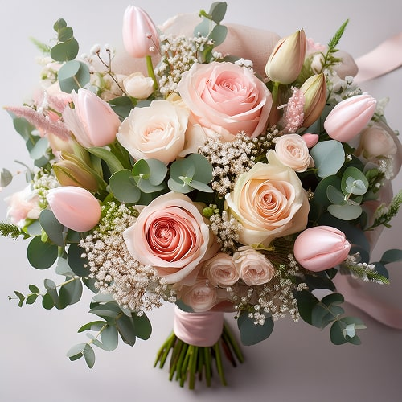

Cherelyn
Flowers for your day, music for your heart.
May this little page bring a smile to you. 🌸
My dearest Cherelyn,
These flowers are for you — not just as a pretty picture, but as a promise. Every petal holds a little piece of my heart: soft like your laughter, bright like your smile, and warm like the way you make everyday moments feel special. I wish I could hand them to you in person, watch your eyes light up, and see that sweet smile I adore.
I want to be closer to your life — to know the little things that make you happy, the songs you hum without thinking, the dreams you keep close. Let this bouquet be a gentle reminder that I'm here: cheering for you, listening to you, and sharing your joy even from afar.
So please smile today, my love. A real one — the kind that reaches your eyes. Because your smile is my favourite flower, and it blooms even brighter than these petals. Whenever you need a little warmth, come back to this page, press play on the music, and remember: you are so loved, and someone is always thinking of you.
Closer — GEHLEE
The song will play automatically when you open the note above. You can also use the player below.